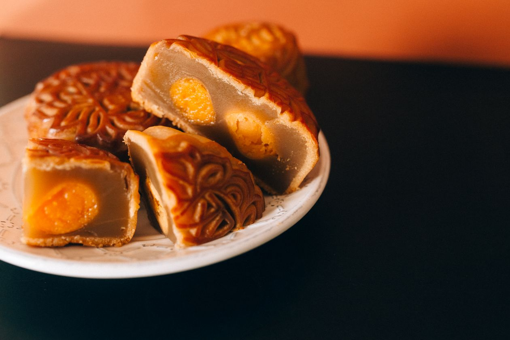

About the baker
Third pair of hands at the same bench.
My grandmother pressed her first mooncake in this shophouse in 1968, with a wooden mould her father carved and a recipe she kept in her head until my mother made her write it down. I am the third pair of hands at the bench. I took over the oven in 2009, and I have baked every season since.
The rest of the year I bake the ordinary things a Penang bakery bakes. But from the first day of August, the shop belongs to one cake. Trays of yolks come out of the salt. The lotus paste, cooked in July, comes down off the shelf. The moulds are washed, dried and knocked against the bench to wake them up. For six weeks we make nothing else, and then — this is the part people argue with — we stop.
A mooncake is a festival food. It means reunion, 团圆: one round cake, cut into wedges, shared by the whole table. Bake it in November and it is just a rich pastry with a yolk in it. The moon is not a marketing season. It is a date.

The craft, honestly
What is actually inside the box
Salted for twenty-five days
I buy duck eggs from one farm in Balik Pulau and cure the yolks myself in salt. Bought-in yolks are cheaper and taste of the bag they came in. Before a yolk is wrapped in paste it is steamed with a little rice wine, cooled, and weighed — a double-yolk cake gets two yolks of the same weight, or the cut looks drunk.
Cooked until it leaves the wok
Lotus seeds are simmered soft, sieved twice, then cooked with oil and sugar over a low flame, stirred without stopping, until the paste pulls away from the wok in one sheet. Rushed paste sweats oil in the box. Mine does not.
Thin skin, heavy heart
The dough is golden syrup, peanut oil, flour and a touch of alkaline water — that is what gives the crust its colour and its give. The ratio never changes: a thin skin around a heavy heart. A cake that is mostly crust is a biscuit wearing a pattern.
Wooden, and knocked, never pried
My grandmother's moulds are wooden, and the oldest is carved with 团圆 — reunion. A pressed cake is knocked out with one sharp strike on the bench. Prying breaks the pattern; a broken pattern does not get sold, it gets eaten by the staff with tea.

The opinion I am known for
About snowskin, since you will ask
Every year somebody — usually a hotel, once a very determined cousin — asks me to make snowskin mooncakes. Every year I say the same thing: snowskin is a fine dessert. It is soft, it is pretty, it keeps in a fridge and it photographs well. It is not a mooncake.
A mooncake is baked. It comes out of a wooden mould with a pattern pressed into a golden crust. It rests three days while the crust takes back its oil. It is cut at a table, under the moon, into wedges too rich to eat alone — that richness is the point, because the cake is meant to be divided. Snowskin skips every one of those steps, and a food that skips all the steps is a different food. Order it from someone who loves making it. From me, you get the baked cake, the way this street has made it for a hundred years.
And since the other argument starts at the same time every year: double yolk is not greed. One yolk is the moon. Two yolks, side by side, is the moon with company — which is what the festival is for.
| Date | What happens |
|---|---|
| Early June 2027 | Duck eggs go into salt. The season starts here, not in August. |
| July 2027 | Lotus paste cooked and shelved. Moulds washed and dried. |
| Sun 1 Aug 2027 | The order book opens. Prices printed and fixed for the season. |
| Mon 2 Aug 2027 | First bake. First cakes rested and ready Thu 5 Aug. |
| Wed 8 Sep 2027 | The order book closes. No exceptions, no cousins. |
| Sat 11 Sep 2027 | Last bake day. The oven's final sixty cakes. |
| Tue 14 Sep 2027 | Last collection, so every cake has its three days' rest. |
| Wed 15 Sep 2027 | Mid-Autumn Festival 中秋. The oven is cold. We cut our own cake at night, like everyone else. |